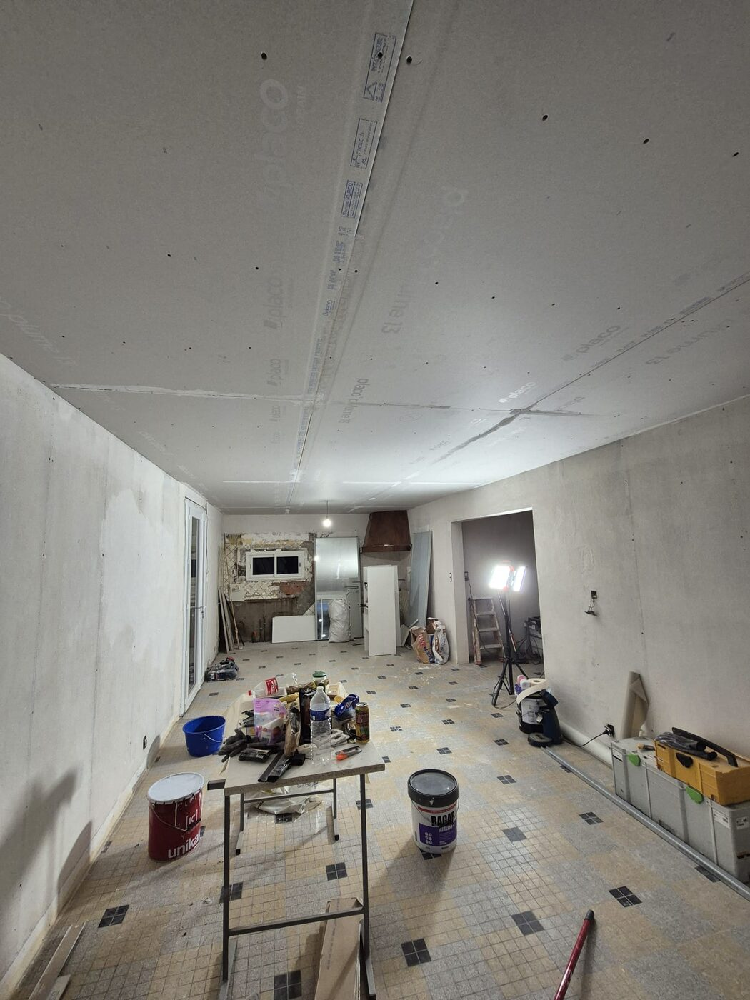
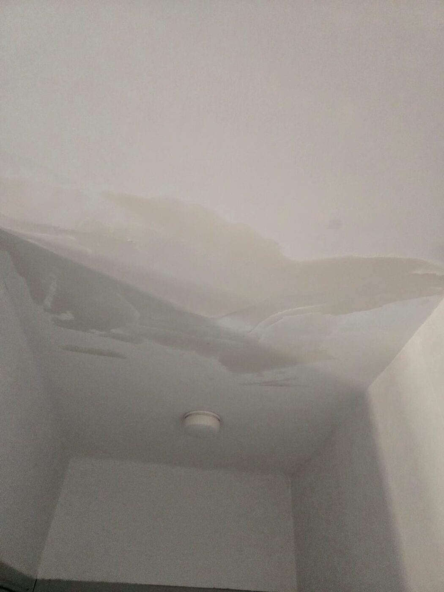
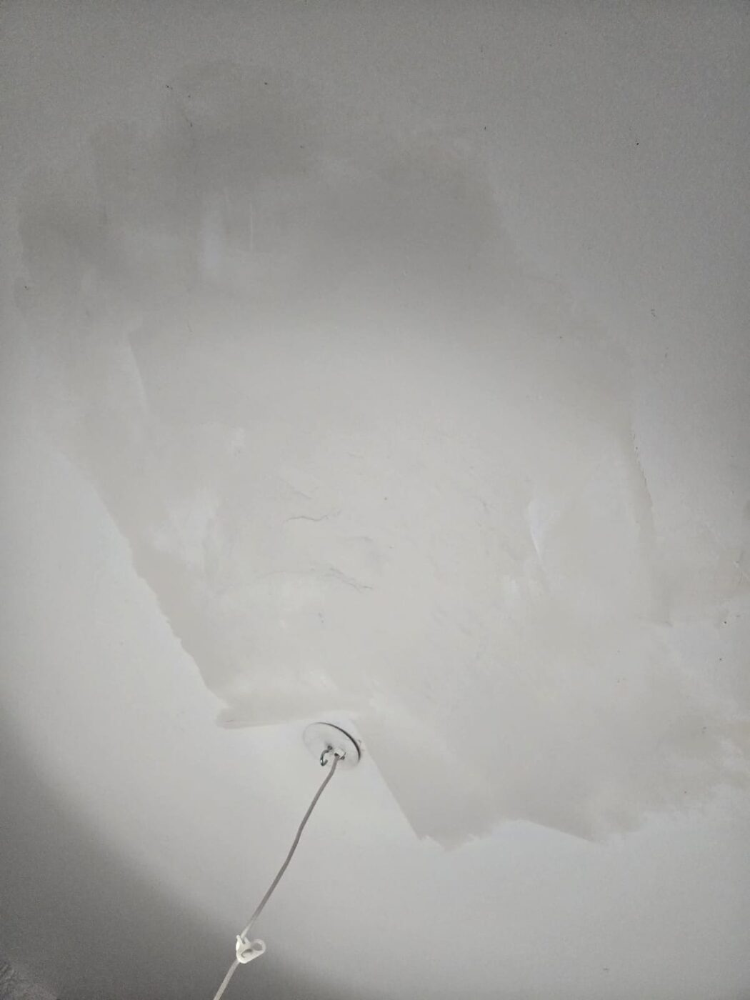
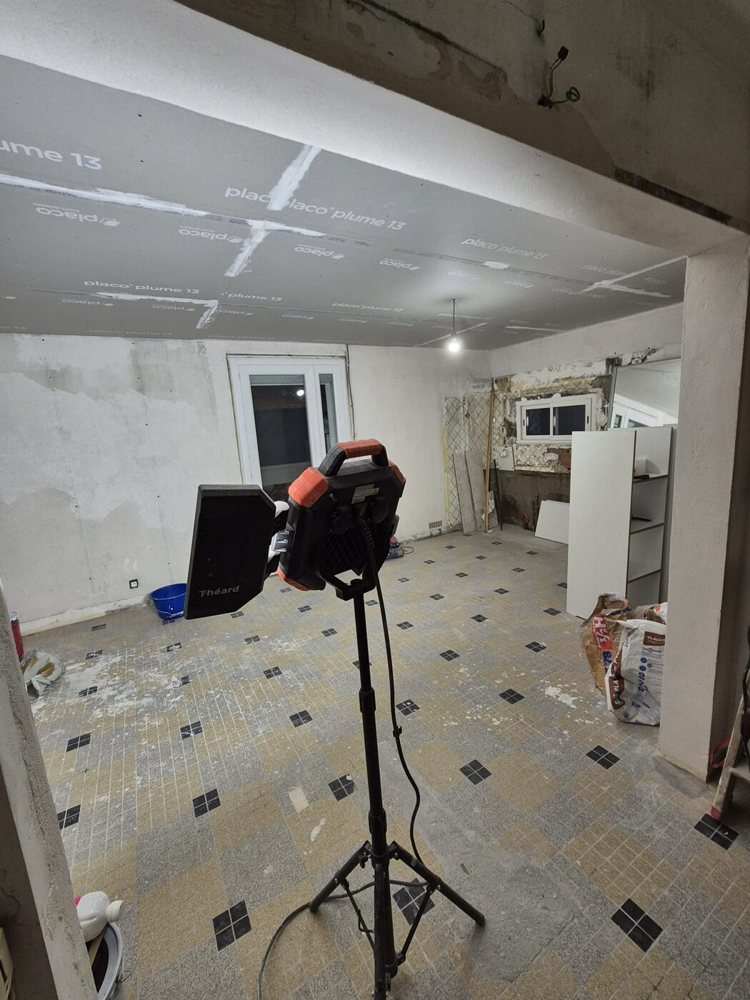

Après un dégât des eaux, une remise en état rapide et soignée s'impose. Voici notre intervention.






Diagnostic de l'humidité et séchage des supports.
Traitement anti-moisissures et anti-traces.
Rebouchage, enduit et ponçage des zones touchées.
Sous-couche bloquante puis finition.
« Réactif et rassurant après notre dégât des eaux, résultat parfait. »Nadia B. — Blagnac
Après sinistre : séchage, assainissement et remise en état.